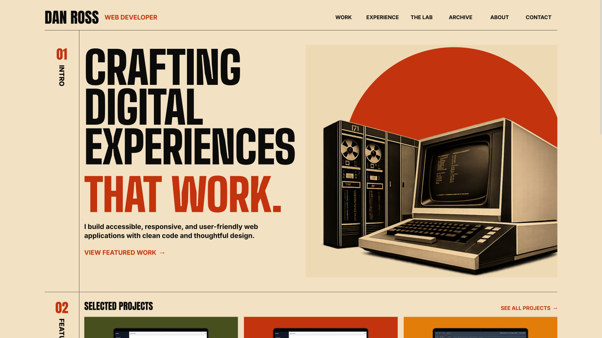

CSS Grid
I used Grid for the larger page structure, including the editorial rails, project layouts, and multi-column sections.
Web Developer
Design + Front-End Development
A custom portfolio designed and built from scratch to feel more personal, use modern front-end techniques, and present my work in a way I can be proud of.
HTML / CSS / JavaScript / Accessibility

Project Overview
I wanted a portfolio I had actually designed and built myself. One that reflected my personality, showed what I can do, and gave me something I would want to keep improving.
The Challenge
My first goal was to match the desktop concept as closely as possible, then adapt it for smaller screens without losing the character of the design.
I started with the desktop composition because the oversized type, structured grid, vintage imagery, and large visual elements were central to the design. I built the site iteratively in the browser and compared each section against the visual concept as it came together.
The color palette and overall attitude draw inspiration from the original The Texas Chain Saw Massacre poster. I especially liked the bold typography and warm 1970s colors. Print texture is used sparingly on the hero circle, project backgrounds, and rainbow graphic.
Key Implementation
Most of my recent layout work had used Bootstrap or Tailwind, so this project gave me a chance to work directly with Grid, Flexbox, relative units, and responsive sizing techniques.
I used Grid for the larger page structure, including the editorial rails, project layouts, and multi-column sections.
Flexbox handles smaller alignment and spacing needs such as navigation, link groups, headings, and footer content.
I worked with rem, viewport units, and
clamp() for typography and spacing instead of
relying only on fixed pixel values.
JavaScript is limited to interactions that need it, including the mobile navigation and back-to-top link.
Accessibility
Accessibility was part of the implementation from the beginning, not something I planned to add after the design was finished.
The Result
I'm proud of the finished look, but I'm also proud that the project gave me a chance to modernize my approach after years of working within legacy systems.
Building without a framework gave me more direct control over the layout and strengthened my experience with Grid, Flexbox, relative units, responsive typography, and accessible interaction patterns.
I plan to keep the site current instead of treating it as a one-time project. That includes adding stronger project details, completing more manual accessibility testing, and continuing to refine the responsive experience.
Next case study
Josephson Manufacturing